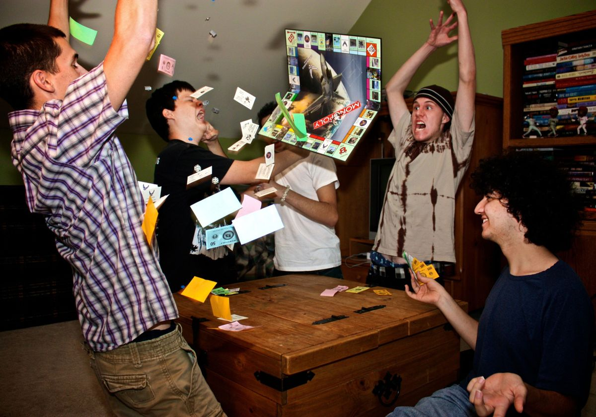
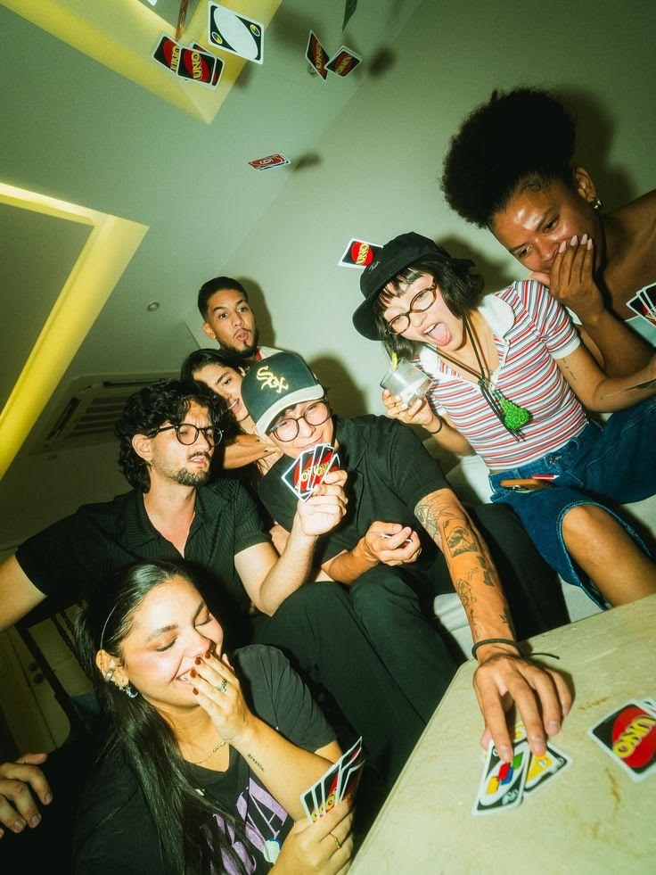

SOBRE NOSOTROS
Creemos que los mejores momentos se viven alrededor de una mesa. Somos mucho más que un local de juegos de mesa: somos un punto de encuentro donde la diversión, la creatividad, la gastronomía y las ganas de compartir se unen para crear experiencias únicas.
Queremos que cada visita sea una nueva aventura. Por eso, combinamos nuestra ludoteca con una propuesta gastronómica pensada para acompañar cada partida y convertir cualquier tarde en un plan especial.
Reúne a tu equipo, tira los dados y deja que empiece la partida.